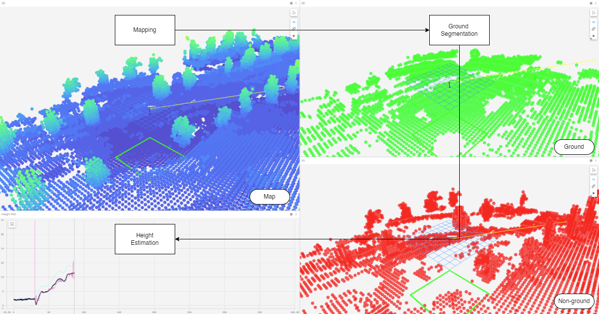
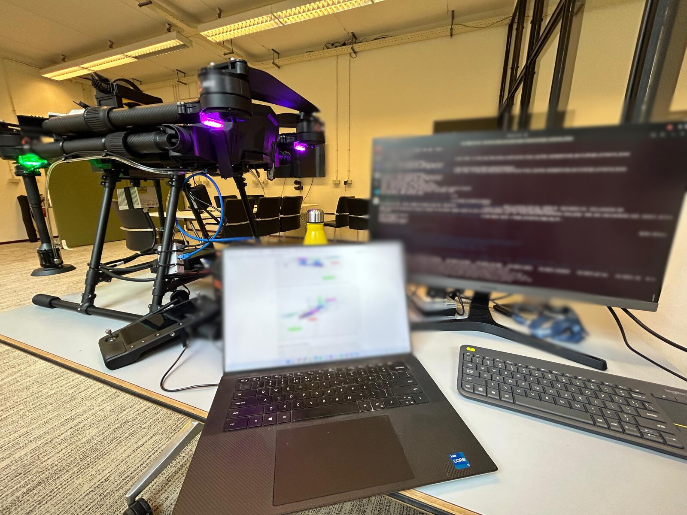
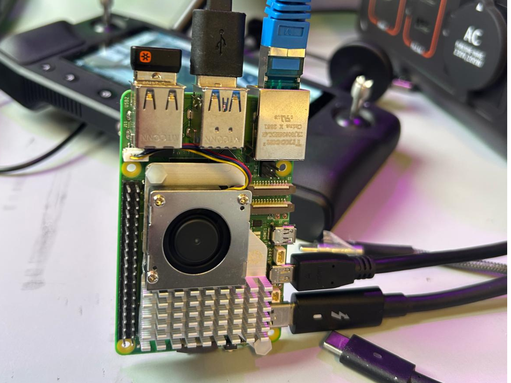

Front-Facing LiDAR Altitude Estimation
Commercial internship at Perciv AI · Commercially deployed in ABZ Innovation agricultural drones
Developed, tested, and deployed a robust algorithm enabling agricultural drones to estimate their altitude using only a front-facing LiDAR sensor—supporting reliable low-altitude flight without GPS or downward sensors.
- Fewer sensors reduce cost and risk of hardware failure
- Can be used as a primary or backup altitude estimator for greater robustness
- More accurate than GPS in complex and irregular environments
LiDAR
C++ / Python
ROS
Embedded
Deployed
technical stack
- Languages & Tools: C++, Python, ROS, Docker, GitHub, Linux
- Embedded Platforms: Raspberry Pi 5, medium-sized UAVs
- Sensor & Robotics Skills: Point cloud processing, sensor calibration, coordinate frame transformations (TF), real-time filtering, hardware-software integration, hardware-in-the-loop (HIL) testing, system latency optimization
- Software Engineering: OOP, modular architecture, unit testing (C++ & Python), Git-based workflows, robust documentation, scalable codebase design
- Simulation & Visualization: Foxglove Studio, RViz
- Soft Skills & Collaboration: Technical writing, team-wide safety training, live demonstrations, documentation for handover and future development
in the field
These images are the property of PERCIV AI—do not use or share them without consent.

Live field testing in an unstructured environment to validate altitude estimation accuracy
Real-time point cloud processing demonstration

Flight test with the algorithm running on-board

Embedded module executing the estimator during field trials
key contributions
- Algorithm Development: Designed real-time altitude estimation algorithms in Python and C++ using ROS, with seamless integration in Linux and Docker environments.
- Embedded Systems Integration: Deployed code on Raspberry Pi 5 modules and physically integrated it into drone hardware for field use.
- Real-World Testing: Performed live drone tests in agricultural settings, gathering sensor data and iterating on code for improved performance.
- Hardware-in-the-Loop (HIL): Built HIL setups to simulate sensor input for optimizing latency and compute load in constrained environments.
- System Design & Knowledge Transfer: Implemented a modular ROS node architecture, led a functional safety lecture for the engineering team, and documented the full system for future scaling and maintenance.